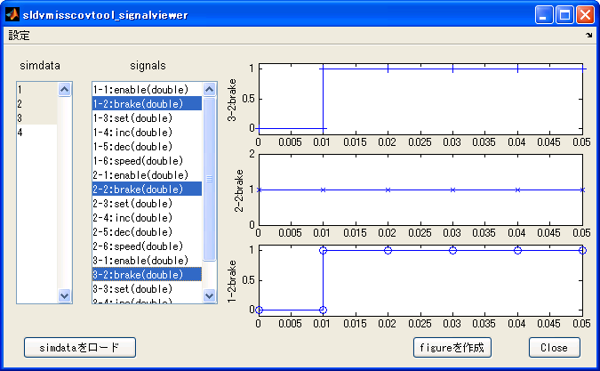
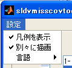

sldvmisscovtool機能詳細
Contents
(1) GUIの全体機能構成
本ツールは、次の6つのペインから構成されています。
- データ管理 データファイルなどで与えられるデータをMATLAB WorkSpace上に読み込み、Simulinkの入力として与えられる形式に変換する機能を提供するペインです。読み込まれたデータは任意の形式に出力することも可能です。
- 対象モデル 「データ管理」ペインにて読み込まれたデータを入力として与える対象モデルを選択します。また、モデルの入力ポートの情報も読み込まれます。
- カバレッジ 「対象モデル」で選択されたモデルに対し、「データ管理」で読み込まれたデータを与え、モデルカバレッジを測定します。
- SLDV 「カバレッジ」ペインで測定したモデルカバレッジで、100%カバレッジが達成されない場合、Simulink Design Verifierの機能を用いて、未達成のカバレッジに到達するテストベクタをこのペインで解析することができます。
- 結果のマージ 「データ管理」で与えられたデータと、「SLDV」ペインで与えられたテストベクタをマージする機能を提供します。
- 情報 操作のヒントをこのペインで表示します。

(2) データ管理ペイン
(2-1) インポート
任意のデータ形式をMATLAB WorkSpace上に、Simulinkの入力として与えることができる形式にインポートします。インポートされたデータはMATLABワークスペース上の変数 simdata として定義されます。インポート可能なファイルの書式は、ユーザが任意に作成することができます。作成方法は「プラグインの詳細」を参照してください。本ツールにはサンプルとして、次の入力形式があらかじめ用意されています。
CSV-ファイル(時間共通)
すべての信号に共通の時間列を第一列に持ち、その時間軸に対して、信号の値が与えられるCSVファイルからデータを読み込みます。
例：
Test Case 01
time, SigA, SigB
0.00, 0, 0
0.10, 10, 0
0.15, 5, 0
0.25, 5, 1
0.30, 7, 0
0.40, 7, 0説明:
- 1行目には、テストケース名を記述します。このテストケース名は、「テストケース」リストボックスに表示される名前になります。
- 2行目には、信号名を記述します。第1列は時間に対応し、第2列はインポートブロックの1番ポートに、第3列はインポートブロックの第2ポートに対応します。モデル上のインポートブロックと同名にする必要はありませんが、エクスポート関数を記述する際には、この信号名情報を利用することができます(例: Signal Builderブロックへエクスポートする際には、Signal Builderブロック内の信号名として与えられます)。
- 3行目以降には、信号値を記述します。
- 制約事項： この形式でCSVファイルを記述する場合には、次の制約があります。 n行目に与えられた時間データを|t(n)| としたとき、|t(n+1) - t(n) > 0| が常に成立すること。
CSV-ファイル(時間各組)
各信号値に対して、個別の時間軸データを持つCSVファイルからデータを読み込みます。
例：
Test Case 02
time, SigA, time, SigB
0, 0, 0, 0
0.1, 10, 0.25, 1
0.15, 5, 0.3, 0
0.3, 7, 0.4, 0
0.4, 7,説明:
- 1行目には、テストケース名を記述します。このテストケース名は、「テストケース」リストボックスに表示される名前になります。
- 2行目には、信号名を記述します。第1列は時間に対応し、第2列はインポートブロックの1番ポートに対応する信号名、第3列は時間、第4列はインポートブロックの第2ポートに対応します。つまり、2n-1列 (n=1,2,...) は時間に対応し、 2n列は、n番目のインポートブロックに対応します。モデル上のインポートブロックと同名にする必要はありませんが、エクスポート関数を記述する際には、信号名情報を利用することができます。
- 3行目以降には、時間と信号値の組を記述します。それぞれの信号に独立の時間情報を与えることができます。
- 制約事項： この形式でCSVファイルを記述する場合には、次の3点の制約があります。 n行目に与えられた時間データを t(n) としたとき、 t(n+1) - t(n) > 0 が常に成立すること。 すべての信号の最終の時間(上記例では0.4秒)を共通にしてください。 すべての信号は、最終信号値が前回値と同一の値を持つように指定してください(上記の例では、 SigAは信号値0.7が0.3秒、0.4秒で同一。SigBは信号値0が0.3秒、0.4秒で同一)。
MAT-ファイル
指定したMATファイルから入力データを読み込みます。MAT-ファイルには、変数simdataが含まれていなければなりません。さらにsimdataは時間付き構造体フォーマットでなければなりません。ここで、時間付き構造体に関する詳細なドキュメントは、次をご参照下さい。
Signal Builder
選択されている(gcbコマンドの結果が指す)ブロックがSignal Builderブロックの場合、全てのグループの信号データをインポートします。
WorkSpace
ワークスペース上に時間付き構造体フォーマットで定義された変数 simdata を読み込みます。
sldvData
Simulink Design Verifierによって解析された結果として作成される sldvData フォーマット形式のMATファイルを読み込みます。

(2-2) エクスポート
インポート機能によって作成されたワークスペース変数 simdata を任意の形式に出力します。出力ファイルの書式は、ユーザが任意に作成することができます。作成方法は「プラグインの詳細」を参照してください。本ツールにはサンプルとして、次の入力形式があらかじめ用意されています。

- CSV-ファイル(時間共通) 選択されているテストケースを、すべての信号に共通の時間列を第一列に持ち、その時間軸に対して、信号の値が与えられるCSVファイルとして書き出します。
- CSV-ファイル(時間各組) 選択されているテストケースを、各信号値に対して、個別の時間軸データを持つCSVファイルとして書き出します。
- MAT-ファイル 選択されているテストケースを、MATファイルとして書き出します。MATファイル内には simdata 変数が保存されます。
- Signal Builder 新規モデルを作成し、 選択されているテストケースを、新たに作成されたSignal Builder ブロックに書き出します。
(2-3) プラグインの詳細
本ツールでは、プラグインという仕組みにより、任意のデータ形式を読み込んだり、任意のデータ形式に書き出したりすることが可能です。
(2-3-1) プラグインとして認識される条件
- sldvmisscovtool.m と同じフォルダに存在する
- インポート関数の場合 import から始まる関数M-ファイル、エクスポート関数の場合 export から始まるM-ファイルである
例：インポート関数
importCSVfile.m importMATfile.m importWorkSpace.m
importCSVfile2.m importSignalBuilder.m importsldvDatafile.m例：エクスポート関数
exportCSVfile.m exportMATfile.m
exportCSVfile2.m exportSignalBuilder.m(2-3-2) プラグイン関数フォーマット : インポート関数
本ツールインストールフォルダ内に含まれる _importTemplate.m に詳細が記述されています。
(2-3-3) プラグイン関数フォーマット : エクスポート関数
本ツールインストールフォルダ内に含まれる _exportTemplate.m に詳細が記述されています。
(2-4) Signal Viewerボタン
をクリックすると、Signal Viewer GUI (sldvmisscovtool_signalviewer)が別画面で表示されます。このウィンドウは、入力テストケース（WorkSpace上のsimdata変数）を可視化する機能を提供します。
(2-5) Signal Viewer GUI (sldvmisscovtool_signalviewer)

リストボックスおよびボタン説明
- simdata リストボックス この描画ツールに読み込まれたWorkSpace変数に含まれるテストケースを表します。上図の場合4つのテストケースが読み込まれています。
- signals リストボックス simdataリストボックスで選択された各テストケースに含まれる信号をすべて表示しています。x-yの表記は、x番目のテストケースに含まれるy番目の信号であり、 simdata(x).signals(y) に対応します。１つまたは複数の行を選択すると、選択された信号をAxes上に描画します。ツールメニュー「設定」-「別々に描画」が有効な場合には、異なるAxesに描画を行います。同設定が無効な場合には、1つのAxesに重ねて描画します。
- "Close"ボタン このウィンドウを閉じます。
- "simdataをロード"ボタン WorkSpace上のsimdata変数を再読み込みします。
- "figureを作成"ボタン 現在描画されているAxesを新しいfigureにコピーし、再描画します。Plot Toolなどを用いて加工・修正する場合に用います。
設定ツールメニュー

凡例を表示
- 有効: グラフ上に凡例を表示します。「別々に描画」が無効である場合にのみ有効なオプションです。
- 無効: グラフ上に凡例を表示しません。
別々に描画
- 有効: 1つのAxesに1つの描画を行います。signalsリストボックスで10以上の信号が選択されている場合には自動的に無効になります。
- 無効: 選択された信号を1つのAxesに重ねて描画します。
言語
- 日本語: GUIの表記を日本語にします。
- English :GUIの表記を英語にします。
(3) 対象モデルペイン
このペインでは、「データ管理」ペインにて読み込まれたデータを入力として与える対象モデルを選択します。

をクリックすると、ファイル選択画面より、対象とするモデルファイルを選択します。一方で、

を選択した場合には、bdrootで与えられるモデルが対象となります。選択後には、モデルが開かれ、内部的にモデルのコンパイルコマンドが発行されます。
modelname([],[],[],'compile')
コンパイルが実行されることにより、モデルの最上位階層に存在するInportブロックのデータタイプが判明し、「入力ポート名・データタイプ」リストに表示されます。解析されたデータタイプは、「モデルの入力データタイプに適用」ボタンをクリックした場合や、「カバレッジ」ペインにおいてカバレッジ測定が実行される前に使用されます。

「モデルの入力データタイプに適用」をクリックすると、「データ管理」ペインで読み込まれ、ベースワークスペースに定義されている時間付き構造体変数 simdata のデータタイプを、モデルの入力ポートのデータタイプと一致するようにキャストします。なお、このキャストは必ずしも必要ではなく、「カバレッジ」ペインにおける「カバレッジ測定」ボタンをクリックした際にも、モデルの入力ポートのデータタイプと異なる場合には、キャストを実施するかの確認がなされます。
(4) カバレッジペイン
「カバレッジの計測」ボタンをクリックすると、「テストケース」リストボックスで選択されているすべてのデータが、モデルの入力ポートのデータタイプと一致しているかどうかの確認がおこなわれます。データタイプが一致しない場合には、キャストを実施するかどうかの確認画面が表示されます。

ここで、「いいえ」を選択した場合には、操作が中止され、何も行われません。「はい」を選択した場合には、「テストケース」リストボックスで選択されているすべてのデータに対するシミュレーションが順次行われ、カバレッジ測定が行われます。選択したテストケースをモデルの入力として与えた場合に、シミュレーションでエラーが発生する場合には、「テストケース」リストボックスの選択が外されます。また、累積カバレッジデータはベースワークスペース上に「covData」として保存されます。 ※ 「ブロックを色分け」にチェックを入れてカバレッジの計測を行いますと、ブロック色によりカバレッジの到達状況を確認できます。

「レポートの表示」ボタンをクリックした場合には、累積カバレッジデータ covData に対して、カバレッジ測定レポートが表示されます。
(5) SLDVペイン

「未達カバレッジの解析」ボタンをクリックすると、「カバレッジ」ペインで測定したモデルカバレッジで100%カバレッジが達成されない場合、Simulink Design Verifierの機能を用いて、未達成のカバレッジに到達するテストベクタを解析することができます。 このペインは、Simulink Design Verifierのライセンスを持っていない場合には表示されません。 テストケースの自動生成機能に関するオプション設定がチェックボックスで用意されています。
(6) 結果のマージペイン

「統合レポート」ボタンをクリックすると、「カバレッジ計測」ボタンをクリックした際にカバレッジ測定が行われた、「テストケース」で選択されているテストケースで満たされたカバレッジ対象と、「未達カバレッジの解析」で求められた自動生成されたテストケースで達成されたカバレッジ対象に対し、合算がおこなわれたカバレッジレポートを生成します。

「テストケースをマージ」をクリックすると、 「テストケース」リストボックスで選択されているテストケース + 「未達カバレッジの解析」によって自動生成されたテストケース がSignal Builderに含まれるテストハーネスモデルが作成されます。
このボタンによって作成されたSignal Builderブロックから、再び「データ管理」ペインにおける「Signal Builderブロックから」インポートを行うことにより、テストケースを再び入力として扱うことができるようになります。